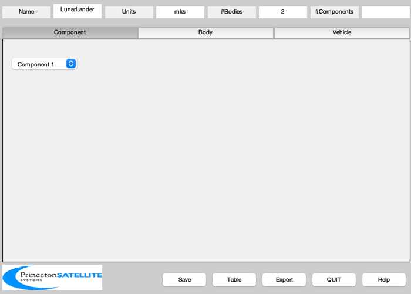
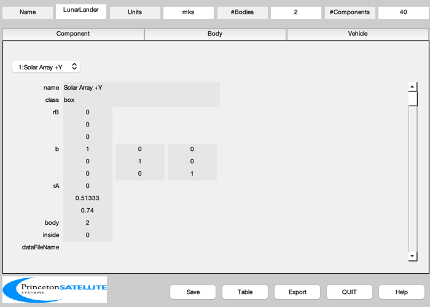
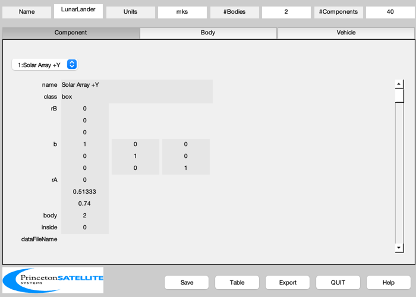
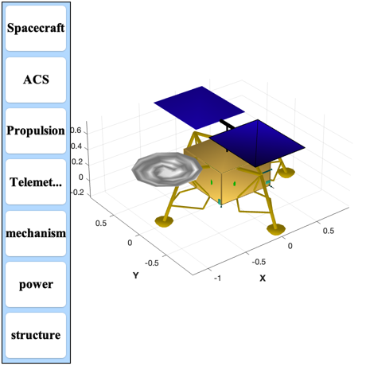
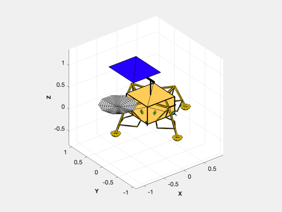

Generate lunar lander CAD model
Generate a CAD model of a lunary lander. Creates power and mass reports of the model and exports it to OBJ. Loads RCS.mat for thruster data.
Components in the model:
GN&C ---- 1 IMU 6 Sun sensors 1 Star camera 1 Navigation camera
Communications -------------- 2 Omni antenna 1 High gain antenna
Power ----- 1 LiOn battery 2 Solar arrays
Data processing --------------- 1 RAD 5545 processor (cPCI) 1 Interface board (cPCI) 1 Mass memory board (cPCI) 1 Command receiver (cPCI) 1 GPS receiver (cPCI)
Structure --------- Composite frame Composite panels
See also BuildCADModel, CreateReport, ExportOBJ, DrawCAD ------------------------------------------------------------------------
Contents
%-------------------------------------------------------------------------- % Copyright (c) 2014 Princeton Satellite Systems, Inc. % All rights reserved. %--------------------------------------------------------------------------
Multibody switch
%-----------------
multiBody = false;
Constants
%------------------ rhoCarbonFiber = 1600; rhoAluminum = 2700; rhoGlass = 2400; rhoSteel = 8000; rhoTungsten = 15630; inToM = 0.0254; solarFlux = 1367; rhoSolarPanel = 10.3e3/36.4; % Dawn spacecraft lToM3 = 0.001; % Liters to cubic meters
Mission date
%--------------
date = [2015 5 7 0 0 0];
jD = Date2JD(date);
Mission information
%--------------------- hOrbit = 450; sma = hOrbit + 6378.165; inc = 80*pi/180; omega = 5*pi/180; % Angular rate omegaDot = omega/5; tRWA = 0.01;
Spacecraft hardware parameters
%-------------------------------- % Thrusters %---------- % LunarRCS.mat is a file with data fields rThruster and uThruster, which are % used in the thruster components load LunarRCS.mat lThruster = [0.1 0.026 0.026 0.026 0.026 0.026 0.026]; rThrusterElec = [0.05 0.01 0.01 0.01 0.01 0.01 0.01]; lThrusterElec = [0.1 0.15 0.15 0.15 0.15 0.15 0.15]; massThruster = [2.00 0.34 0.34 0.34 0.34 0.34 0.34]; dConeThruster = [0.1 0.02 0.02 0.02 0.02 0.02 0.02]; % Bus %---- u = 0.1; zBox = 4*u; xBox = 6.8*u; yBox = 6.8*u; panelThickness = 0.004; % Inertia %-------- inertia = [1.1565 -0.0074 0.0561;... -0.0074 1.0380 0.02281;... 0.0561 0.0228 0.7354]; % Fuel tank %---------- mFuelLRO = 654; rhoHPGP = mFuelLRO/0.56; fTank = 49/mFuelLRO; massFuel = 67.63; volFuel = massFuel/rhoHPGP/2; rTank = (volFuel/(4*pi/3))^(1/3); f = 0.8; rATank = [f*rTank*[1 -1;1 -1];zBox/2 zBox/2]; % Star camera %------------ cameraAperture = 12.5; cameraFocalLength = 25.0; cameraLengthSunShade = 35.0; cameraApertureSunShade = 25.0; massCamera = 0.25; rCamera = 0.4*[xBox -xBox;-yBox yBox;zBox zBox]; uC = [0;0;1]; v1 = Unit([1;-1;-1]); v2 = Unit([-1;1;-1]); b1 = Q2Mat(U2Q(uC,v1)); b2 = Q2Mat(U2Q(uC,v2)); bCamera = {b1 b2}; % High Gain Antenna %------------------ aBCHGA = [0.8*xBox 0.8*xBox 0.2*xBox]; powerHGA = 20; % Omni antennas %-------------- powerOmni = 2; xOmni = [xBox xBox; yBox -yBox; 0 0]/2; rOmni = 0.002; c = Constant('speed of light')*1000; % m/s fComm = 2e9; % sband lOmni = 0.5*c/fComm; massOmni = lOmni*pi*rOmni^2*rhoAluminum; bOmni = {[1 0 0;0 0 1;0 -1 0] [1 0 0;0 0 -1;0 1 0]}; % IMU LN-200S %------------ radiusIMU = 0.0889/2; hIMU = 0.0851; massIMU = 0.748; dIMU.manufacturer = 'Northrop Grumman'; dIMU.name = 'LN-200S'; powerIMU = 12; % Sun Sensors %------------- massSunSensor = 0.035; xSunSensor = 0.06; ySunSensor = 0.03; zSunSensor = 0.012; bSunSensor = [1 -1 2 -2 3 -3]; powerSunSensor = 0.6; % Processing boards - 3U CompactPCI boards %----------------------------------------- nBoards = 5; powerBoard = 12; xChassis = 0.16 + 0.02; yChassis = 0.1 + 0.02; zChassis = 0.02*nBoards + 0.02; massChassis = 1; % Solar arrays %------------- massSAD = 0.2; solarPanelThickness = 0.004; strutLength = yBox/2; nPanels = 2; panelLength = zBox; panelWidth = xBox; massSolarPanel = panelLength*panelWidth*rhoSolarPanel; solarPanelEff = 0.295; zSolarWing = zBox/2; arrayMassFront = 0.5*solarPanelThickness*panelLength*panelWidth*nPanels*rhoGlass; arrayMassBack = 0.5*solarPanelThickness*panelLength*panelWidth*nPanels*rhoCarbonFiber; massStrut = 0.1; yPanel = yBox/6; bX = [ 1 0 0;0 0 -1;0 1 0]'; bY = [-1 0 0;0 1 0;0 0 -1]; % Battery %-------- power = 2*solarPanelEff*solarFlux*nPanels*panelLength*panelWidth; powerNight = 5; massBattery = powerNight*24*15/135; % Saft batteries volBattery = powerNight*24*15/250; wBattery = (2*volBattery*lToM3)^(1/3); % One length is half the others
Initialize BuildCADModel and create the Core body
%--------------------------------------------------- BuildCADModel( 'initialize' ); BuildCADModel( 'set name' , 'LunarLander' ); BuildCADModel( 'set units', 'mks' ); % Core %----- m = CreateBody('make','name','Core'); BuildCADModel('add body', m ); if( multiBody ) rHinge = [0;0;panelWidth/2]; else rHinge = [0;0;0]; end m = CreateBody('make','name','SolarWing','rHinge',rHinge,'previousBody',1); BuildCADModel('add body', m ); if( ~multiBody ) zPanel = zBox+panelWidth/2; zStrut = zBox; end % This creates the connections between the bodies %------------------------------------------------ BuildCADModel( 'compute paths' );
Components
% Solar Array 1 %--------------- m = CreateComponent( 'make', 'box', 'x',panelWidth, 'y',nPanels*panelLength, 'z',solarPanelThickness,... 'faceColor', 'solar cell', 'rA', [0;yPanel+panelLength;zPanel], 'mass', massSolarPanel,... 'name','Solar Array +Y', 'body', 2,... 'inside', 0, 'power', -power/2 ); BuildCADModel( 'add component', m ); % Solar Array 2 %--------------- m = CreateComponent( 'make', 'box', 'x',panelWidth, 'y',nPanels*panelLength, 'z',solarPanelThickness,... 'faceColor', 'solar cell', 'rA', [0;-yPanel-panelLength;zPanel], 'mass', massSolarPanel,... 'name','Solar Array -Y', 'body', 2,... 'inside', 0, 'power', -power/2 ); BuildCADModel( 'add component', m ); % Horizontal motor %----------------- m = CreateComponent( 'make', 'cylinder', 'rUpper', 0.02, 'rLower', 0.02, 'h', 2*yPanel, 'n', 24, 'rA',[0;-yPanel;zPanel],... 'name', 'Motor', 'body', 2, 'mass', massStrut,'power',0,'b',[1 0 0;0 0 1;0 -1 0],... 'faceColor', [0 0 0], 'inside', 1); BuildCADModel( 'add component', m ); % Vertical strut %--------------- m = CreateComponent( 'make', 'cylinder', 'rUpper', 0.01, 'rLower', 0.01, 'h', panelWidth/2, 'n', 24, 'rA',[0;0;zStrut],... 'name', 'Motor', 'body', 1, 'mass', massStrut,'power',0, ... 'faceColor', [0 0 0], 'inside', 1); BuildCADModel( 'add component', m );
Bus Frame
%------------ [v, f] = PanelFrame( xBox, yBox, panelThickness, panelThickness ); massFrame = 2*(xBox + yBox)*panelThickness^2*rhoCarbonFiber; m = CreateComponent( 'make', 'generic', 'vertex', v, 'face', f,... 'faceColor', 'gold foil','rA', [0;0;zBox-2*panelThickness],... 'mass', massFrame, 'name', 'Top Frame', 'body', 1, 'inside', 0 ); BuildCADModel( 'add component', m ); v = ([1 0 0; 0 1 0; 0 0 -1]*v')'; m = CreateComponent( 'make', 'generic', 'vertex', v, 'face', f,... 'faceColor', 'gold foil','rA', [0;0;2*panelThickness],... 'mass', massFrame, 'name', 'Bottom Frame', 'body', 1, 'inside', 0 ); BuildCADModel( 'add component', m ); z1 = 2*panelThickness; z2 = z1 + zBox-2*panelThickness; c = []; c.x = [ -0.250 0 0 0.250 0.250 0 0 -0.250]*inToM; c.y = [ 0.375 0.375 0.125 0.125 -0.375 -0.375 -0.125 -0.125]*inToM; [v, f] = ShapedStrut( [0;0;z1], [0;0;z2], c ); angle = 0; sX = [1 1 -1 -1]; sY = [1 -1 -1 1]; massStrut = panelThickness^2*zBox*rhoCarbonFiber; for k = 1:4 angle = angle + pi/2; xF = sX(k)*(xBox/2 - panelThickness/2); yF = sY(k)*(yBox/2 - panelThickness/2); b = [cos(angle) sin(angle) 0;-sin(angle) cos(angle) 0;0 0 1]; vR = (b*v')'; m = CreateComponent( 'make', 'generic', 'vertex', vR, 'face', f,... 'faceColor', 'gold foil','rA', [xF;yF;0], ... 'mass', massStrut, 'name', ['z strut' num2str(k)], 'body', 1,... 'inside',0 ); BuildCADModel( 'add component', m ); end
Panels
%--------- panelName = {'+X' '-X' '+Y' '-Y' '+Z' '-Z'}; color = {'gold foil' 'gold foil' 'gold foil' 'gold foil' 'gold foil' 'radiator'}; xLoc = (xBox - panelThickness)/2; yLoc = (yBox - panelThickness)/2; zLoc = (zBox - panelThickness)/2; wX = xBox - 2*panelThickness; wY = yBox - 2*panelThickness; wZ = zBox - 2*panelThickness; th = panelThickness; zH = zBox/2; rAP = [ xLoc -xLoc 0 0 0 0 ;... 0 0 yLoc -yLoc 0 0;... zH zH zH zH zBox 0]; dP = [ th th wX wX wX wX ;... wY wY th th wY wY;... wZ wZ wZ wZ th th]; for k = 1:6 massPanel = dP(1,k)*dP(2,k)*dP(3,k)*rhoCarbonFiber; m = CreateComponent( 'make', 'box', 'x', dP(1,k), 'y',dP(2,k), 'z',dP(3,k),... 'faceColor', color{k}, 'rA', rAP(:,k), 'mass', massPanel,... 'name', ['Panel ' panelName{k}], 'body', 1,... 'inside', 0 ); BuildCADModel( 'add component', m ); end % Landing legs %-------------- rL = 35; [v, f] = LandingLegsCAD('scale',0.01,'xy spacing',rL); m = CreateComponent( 'make', 'generic', 'v',v,'f',f,... 'faceColor', [1 0.84 0] ,'rA', [0;0;0],... 'name', 'Landing Legs','inside',0); BuildCADModel( 'add component', m ); % Battery %--------- rB = 0.5*([0;yBox;0] + [-2*panelThickness;-wBattery-2*panelThickness;wBattery/2]); m = CreateComponent( 'make', 'box','x', wBattery, 'y', wBattery, 'z', wBattery/2,... 'faceColor', [0 1 0] ,'rA', rB,... 'name', 'Battery 1','inside',1); BuildCADModel( 'add component', m ); % Omni antennas %--------------- for k = 1:2 m = CreateComponent( 'make', 'cylinder', 'rUpper', rOmni, 'rLower', rOmni, 'h', lOmni, 'n', 24, 'rA',xOmni(:,k),'b',bOmni{k},... 'name', sprintf('Omni %d',k), 'body', 1, 'mass', massOmni,'power',powerOmni, ... 'faceColor', [0 0 0], 'inside', 1); BuildCADModel( 'add component', m ); end % High Gain Antenna %------------------- m = CreateComponent( 'make', 'ellipsoid', 'name', 'High Gain Antenna',... 'body', 1, 'abc', aBCHGA, 'thetaUpper',pi/4,'b',[1 0 0;0 1 0;0 0 -1],... 'n',10, 'rA',[-1.2*xBox;0;1.4*zBox], 'faceColor', 'aluminum', 'edgeColor','aluminum','power',powerHGA); BuildCADModel('add component', m ); % Fuel tanks %------------ m = CreateComponent( 'make', 'sphere','radius', rTank,'n',20,... 'faceColor', [0 1 0] ,'rA', rATank(:,1),'mass',fTank*massFuel/2,... 'name', 'HPGP Tank 1','inside',1); BuildCADModel( 'add component', m ); m = CreateComponent( 'make', 'sphere','radius', rTank,'n',20,... 'faceColor', [0 1 0] ,'rA', rATank(:,2),'mass',fTank*massFuel/2,... 'name', 'HPGP Tank 2','inside',1); BuildCADModel( 'add component', m ); % Star cameras %-------------- [v, f] = StarCameraBasicModel( cameraAperture, cameraFocalLength, cameraApertureSunShade, cameraLengthSunShade ); m = CreateComponent( 'make', 'generic', 'v', v, 'f', f, 'b', bCamera{1},... 'rA', rCamera(:,1), 'name', 'Star Camera 1', 'body', 1, 'mass', massCamera ); BuildCADModel( 'add component', m ); m = CreateComponent( 'make', 'generic', 'v', v, 'f', f, 'b', bCamera{2},... 'rA', rCamera(:,2), 'name', 'Star Camera 2', 'body', 1, 'mass', massCamera ); BuildCADModel( 'add component', m );
Sun sensors
%-------------- for k = 1:6 switch bSunSensor(k) case -1 rA = [-xBox/2 - zSunSensor/2;-yBox/2+xSunSensor/2;ySunSensor]; b = [0 0 -1;0 1 0;1 0 0]; case 1 rA = [ xBox/2 + zSunSensor/2;-yBox/2+xSunSensor/2;ySunSensor]; b = [0 0 1;0 1 0;-1 0 0]; case -2 rA = [ xBox/2-xSunSensor/2;-yBox/2 - zSunSensor/2;xSunSensor]; b = [1 0 0;0 0 -1;0 1 0]; case 2 rA = [ xBox/2-xSunSensor/2;yBox/2 + zSunSensor/2;xSunSensor]; b = [1 0 0;0 0 1;0 -1 0]; case -3 rA = [ xBox/2-xSunSensor/2;yBox/2-ySunSensor/2;-zSunSensor/2]; b = [1 0 0;0 1 0;0 0 -1]; case 3 rA = [ xBox/2-xSunSensor/2;yBox/2-ySunSensor/2;zBox + zSunSensor/2]; b = eye(3); end m = CreateComponent( 'make', 'box', 'x', xSunSensor, 'y', ySunSensor, 'z', zSunSensor, 'b',b,'mass',massSunSensor,... 'inside', 1, 'rA', rA, 'name', sprintf('Sun Sensor %d',k), 'body', 1, 'faceColor', [0.25 1 0.8], 'power', powerSunSensor ); BuildCADModel( 'add component', m ); end % IMU %----- rIMU = [ xBox/2-radiusIMU-4*panelThickness;... yBox/2-radiusIMU-4*panelThickness;... panelThickness]; m = CreateComponent( 'make', 'cylinder', 'rUpper', radiusIMU, 'rLower',radiusIMU,'h',hIMU,... 'inside', 1,'deviceInfo',dIMU,... 'rA', rIMU, 'name', 'IMU', 'body', 1, 'faceColor', [0 0 1], 'power', powerIMU ); BuildCADModel( 'add component', m ); % Chassis %--------- m = CreateComponent( 'make', 'box', 'x', xChassis, 'y', yChassis, 'z', zChassis, 'faceColor', [0 0.5 0.5],... 'rA', [-xBox/2 + xChassis/2 + 2*panelThickness; -yBox/2 + yChassis/2 + 2*panelThickness; zBox - zChassis/2 - 2*panelThickness],... 'mass', massChassis, 'name', 'C&DH Box', 'body', 1, 'inside', 1 ); BuildCADModel( 'add component', m ); % Thrusters %---------- for k = 1:7 [v, f] = ThrusterCAD( -uThruster(:,k), dConeThruster(k), lThruster(k), 12, rThrusterElec(k), lThrusterElec(k) ); s = sprintf('Thruster %d',k); m = CreateComponent( 'make', 'generic', 'v', v, 'f', f, 'faceColor', [0 0.5 0.5],... 'rA', rThruster(:,k), 'mass', massThruster(k), 'name', s, 'body', 1, 'inside', 0 ); BuildCADModel( 'add component', m ); end
Add subsystems
%---------------- BuildCADModel( 'add subsystem', 'ACS', {'star camera','rwa'} ); BuildCADModel( 'add subsystem', 'Propulsion', {'thruster','tank'} ); BuildCADModel( 'add subsystem', 'Telemetry and Command', {'C&DH', 'omni', 'signal','processor', 'antenna', 'board'} ); BuildCADModel( 'add subsystem', 'mechanism', {'drive'} ); BuildCADModel( 'add subsystem', 'power', {'solar array', 'battery'} ); BuildCADModel( 'add subsystem', 'structure', {'support', 'frame', 'strut', 'panel'} );
Update the mass properties to produce the tables
%-------------------------------------------------- BuildCADModel( 'update body mass properties' ); g = BuildCADModel( 'get model' ); BuildCADModel('show vehicle'); DrawCAD( g ); CreateReport( g, 'tex', FileFullpath('LunarLanderMass'), 'mass', 1, 1, 1 ) CreateReport( g, 'tex', FileFullpath('LunarLanderPower'), 'power', 1, 1, 1 )  
Export to obj
%--------------- ExportOBJ(g,FileFullpath('LunarLander')); %-------------------------------------- % PSS internal file version information %-------------------------------------- % $Id: 03cd9627730e6ac2362dd445d3f559838b2b8d6c $